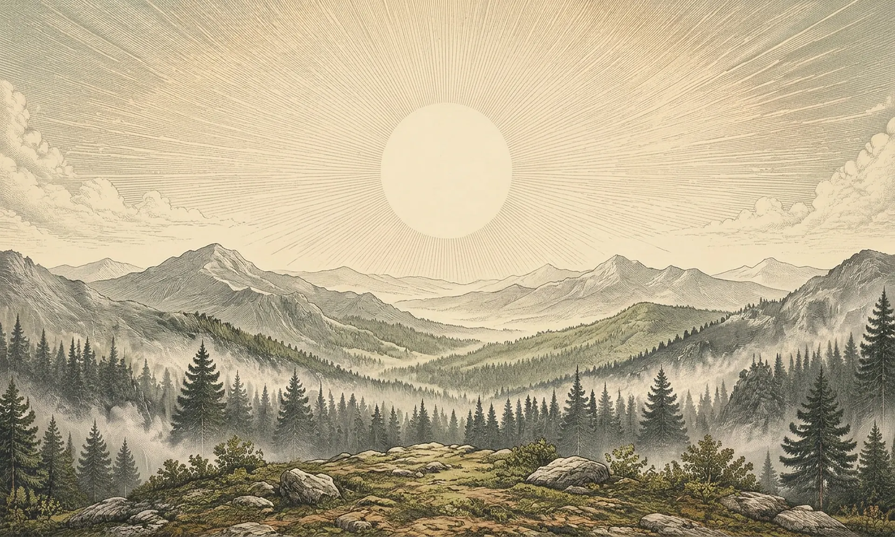
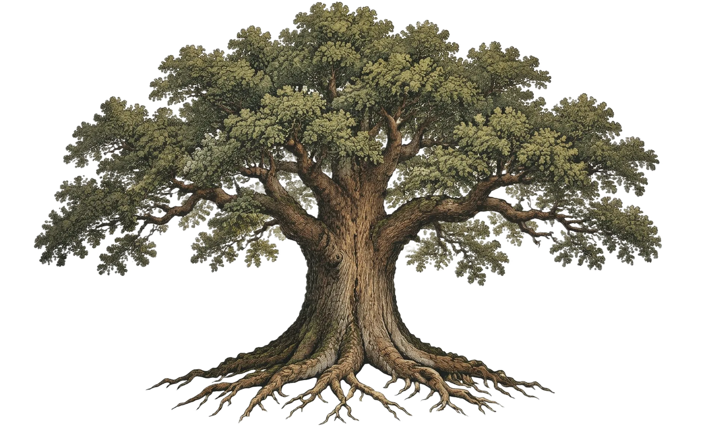

De las raíces a la cima
Haz clic en cualquier parte del árbol para recorrer esa rama. Con la rueda te acercas; arrastrando te mueves.


Haz clic en cualquier parte del árbol para recorrer esa rama. Con la rueda te acercas; arrastrando te mueves.